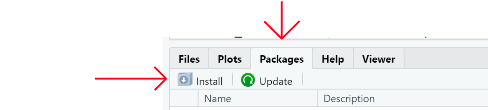

Package
R Bootcamp 2020
Package
Packages hold functions and other objects grouped according to theme or purpose described by the DESCRIPTION file.
Examples:
To load packages in R use library or require
library(tidyverse) require(magrittr)
packageDescription('stats')## Package: stats ## Version: 3.6.3 ## Priority: base ## Title: The R Stats Package ## Author: R Core Team and contributors worldwide ## Maintainer: R Core Team <R-core@r-project.org> ## Description: R statistical functions. ## License: Part of R 3.6.3 ## Imports: utils, grDevices, graphics ## Suggests: MASS, Matrix, SuppDists, methods, stats4 ## NeedsCompilation: yes ## Built: R 3.6.3; x86_64-w64-mingw32; 2020-02-29 ## 09:37:04 UTC; windows ## ## -- File: C:/Program Files/R/R-3.6.3/library/stats/Meta/package.rds
packageDescription('stats') for DESCRIPTION information.help(package='stats') for index page, orpackage?stats Information on package ‘stats’
Description:
Package: stats
Version: 3.6.3
Priority: base
Title: The R Stats Package
Author: R Core Team and contributors worldwide
Maintainer: R Core Team <R-core@r-project.org>
Description: R statistical functions.
License: Part of R 3.6.3
Imports: utils, grDevices, graphics
Suggests: MASS, Matrix, SuppDists, methods, stats4
NeedsCompilation: yes
Built: R 3.6.3; x86_64-w64-mingw32; 2020-02-29 09:37:04 UTC;
windows
packageDescription('stats') for DESCRIPTION information.help(package='stats') for index page, orpackage?stats for the package help page.stats-package package:stats R Documentation
The R Stats Package
Description:
R statistical functions
Details:
This package contains functions for statistical calculations and
random number generation.
For a complete list of functions, use ‘library(help = "stats")’.
Author(s):
R Core Team and contributors worldwide
Maintainer: R Core Team <email: R-core@r-project.org>
Packages encapsulate functions and objects together in a Namespace. A namespace is comprised of three layers.
To see what is loaded use search()
search()
## [1] ".GlobalEnv" "package:magrittr" ## [3] "package:forcats" "package:stringr" ## [5] "package:dplyr" "package:purrr" ## [7] "package:readr" "package:tidyr" ## [9] "package:tibble" "package:ggplot2" ## [11] "package:tidyverse" "package:printr" ## [13] "package:knitr" "package:stats" ## [15] "package:graphics" "package:grDevices" ## [17] "package:utils" "package:datasets" ## [19] "package:methods" "Autoloads" ## [21] "package:base"
To use a function from a specific package use the :: operator.
It may also be used to call a function from a package with loading the package to the search path.
dplyr::last(.leap.seconds)
## [1] "2016-12-31 17:00:00 MST"
The ::: operator breaks encapsulation and retrieves the internal objects of a package, but you will have to know what you are looking for and these functions are rarely documented.
Repositories are locations where you (and R) can find packages to install and use.
CRAN stands for: Comprehensive R Archive Network
Most packages will be installed by install.packages() function:
# Tools for regression and classification models
install.packages('caret')
Most will find it easier to install through RStudio
source("https://bioconductor.org/biocLite.R")
biocLite()
biocLite("Rgraphviz")
if (!requireNamespace("BiocManager", quietly = TRUE))
install.packages("BiocManager")
BiocManager::install(version = "3.11")
BiocManager::install("Rgraphviz")
Not technicaly a repository
For latest development, i.e. pre-release code use the devtools package.
install.packages("devtools")
devtools::install('halpo/pivot')
installed.packages()remove.package() ← I don’t think I have ever done this.old.packages()update.packages()Of course all this can be acomplished through RStudio a bit easier.